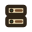
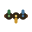
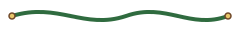
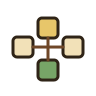
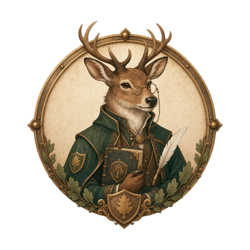
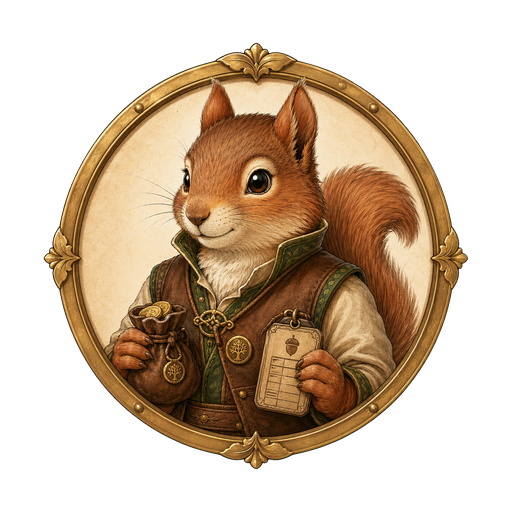

Watchtower operations
Orchard Vale Command Center
Live village coordination for alerts, stewards, dependencies, routes, public systems, and response actions.

Guild Systems 12 11 green, 1 amber
Next Bell 15:40 West bridge path clearsLive overview
Village Situation Map


North gate clear
Bridge delay
Watermill sync
- Clear post
- Watch needed
- Action required
Attention queue
Active Alerts
Urgent
Bridge lantern oil delayed
Courier route is clear, but the oil crate is still at the west depot.
Watch
Market crowd near fountain
Welcome table needs one extra steward to keep the path moving.
Review
Archive desk form update
Question labels are ready for Alder's final wording pass.
Service health
Guild Systems

11/12
Courier routing
Healthy, 8 minute cadence
Green
Watermill automation
One belt inspection pending
Amber
Gate watch
North and south posts staffed
Green
Coordinated response
Bridge Oil Delay
-
Confirm path
West bridge route is clear.
-
Send runner
Robin carries the depot note.
-
Light first bracket
Rowan starts from market side.
Hidden coupling
Dependency Threads
On watch
Steward Roster


Elder FenDecision desk
Ready

PipSupply room
Busy
MarrowWelcome table
Ready
Live ledger
Command Event Log
Time
Signal
Owner
State
15:10
Oil crate still at west depot
Robin
In transit
14:45
Fountain queue widening
Marrow
Handled
14:20
Archive labels ready for review
Alder
Review
13:55
North gate route confirmed clear
Bramble
Closed